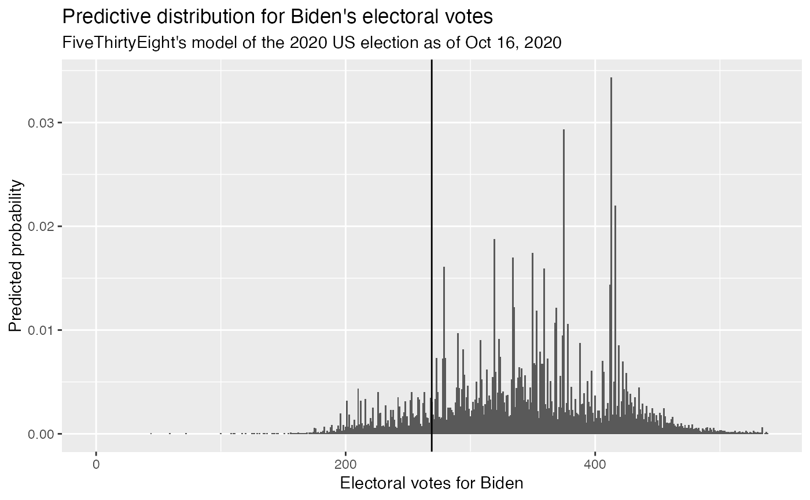

R/data.R
pres_pred_2020.RdA dataset containing the predicted probabilities for each major party candidate to receive different numbers of electoral votes in the 2020 US Presidential election according to FiveThirtyEight as of October 16, 2020.
A data frame with 539 rows and 11 variables:
The election cycle: 2020
The kind of race this forecast pertains to: "President"
The model type: "polls-plus"
Date of the model run, as a Date object: "2020-10-16"
Name of the incumbent: "Trump"
Name of the challenger: "Biden"
Chance that the incumbent wins total_ev electoral votes: numeric between 0 and 1
Chance that the challenger wins total_ev electoral votes: numeric between 0 and 1
Number of electoral votes in question: integer between 0 and 538
Date and time the simulations were run, as a POSIXct object: "2020-10-16 21:08:11 EST"
Number of simulations run: 40000
This dataset contains the electoral vote output of
FiveThirtyEight's 2020 US Presidential Election Forecast
as of Oct 16, 2020. The original dataset is licensed under the
CC BY 4.0 license. The dataset
was obtained from the
FiveThirtyEight website,
and its metadata description is based on the dataset description in the
FiveThirtyEight Github repository.
The dataset has been only been slightly modified: date formats were converted
from strings into R date objects; empty columns related to third party candidates
were dropped; and the data frame was sorted by total_ev.
library(ggplot2) data(pres_pred_2020, package = "plinko") ggplot(pres_pred_2020, aes(x = total_ev, y = evprob_chal)) + geom_col() + geom_vline(xintercept = 269) + labs( x = "Electoral votes for Biden", y = "Predicted probability", title = "Predictive distribution for Biden's electoral votes", subtitle = "FiveThirtyEight's model of the 2020 US election as of Oct 16, 2020" )